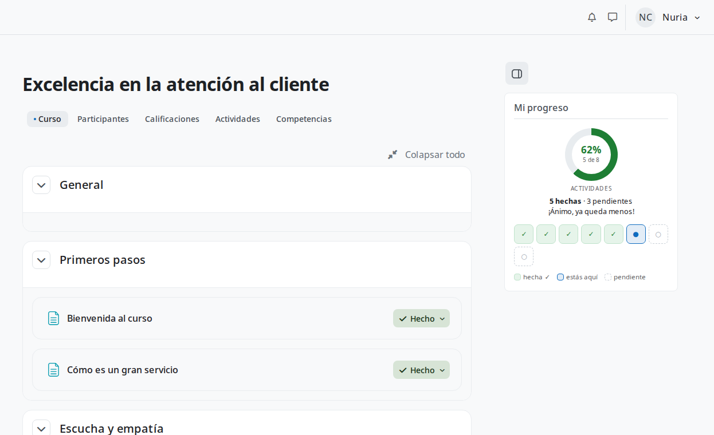
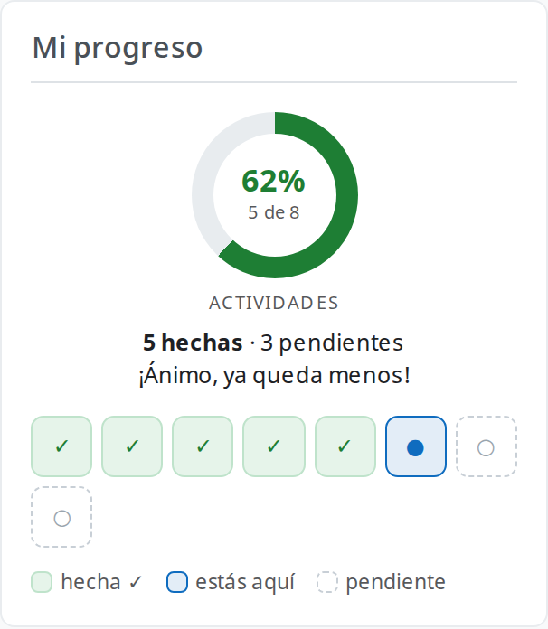
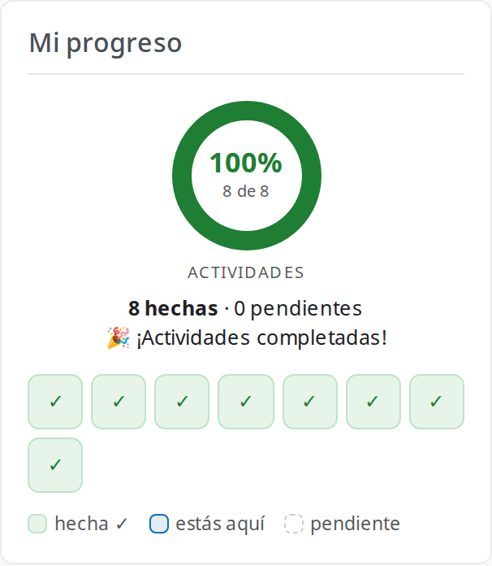
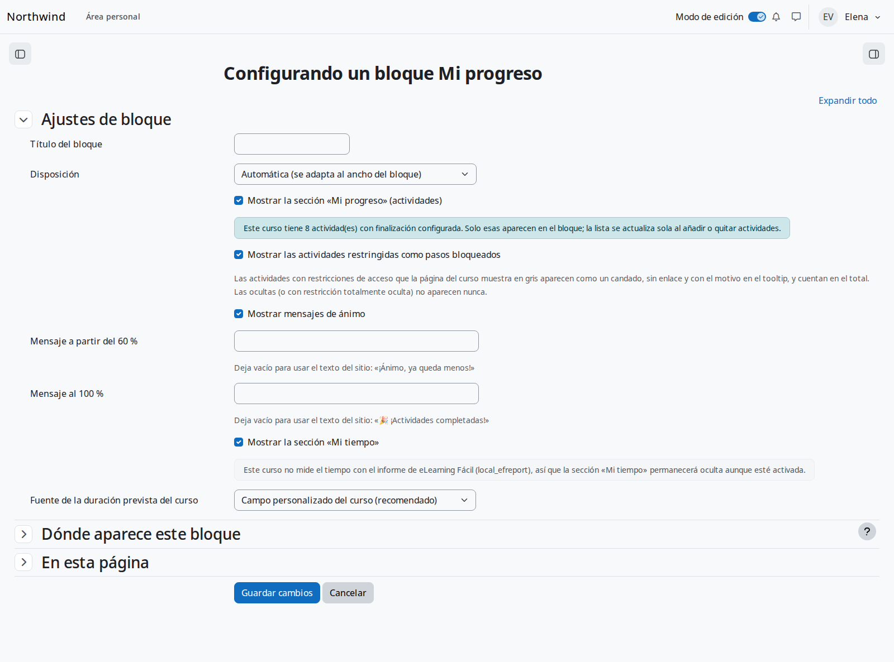
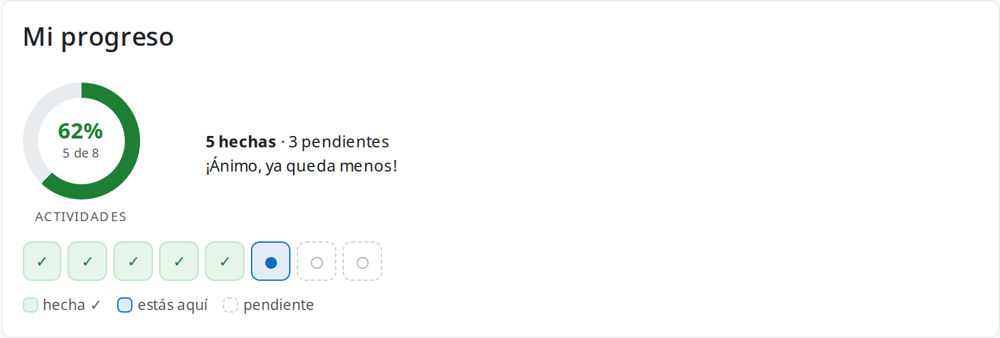
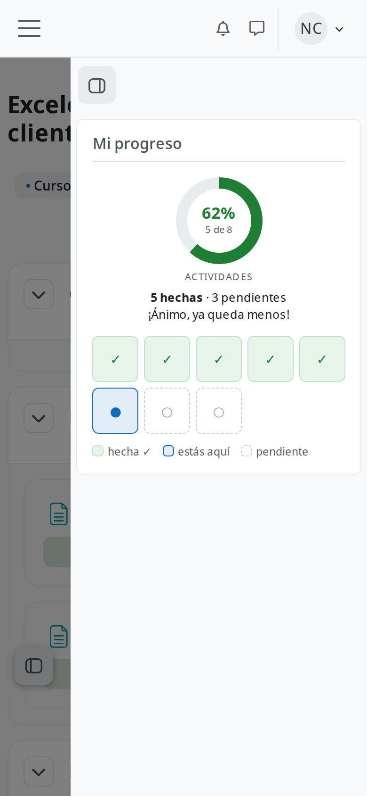

Bloque gratuito para Moodle™
Mi progreso
Cada estudiante sabe cuánto le queda.
Guía del plugin · block_efprogress
Versión 0.6.3 · Compatible con Moodle™ 5.1, 5.2 y 5.3

Desarrollado y mantenido por eLearning Fácil
Una empresa independiente que crea plugins para Moodle™ para centros de formación y empresas:
seguimiento del tiempo, informes, certificados y gestión de estudiantes.
elearningfacil.com · info@elearningfacil.com
Guía
El bloque del estudiante
Su progreso en el curso, de un vistazo: lo hecho, dónde está y lo que le falta.
1¿Qué es y para qué sirve?
Mi progreso es un bloque de curso que enseña a cada estudiante su propio progreso:
un anillo con el porcentaje de actividades completadas y una marca por actividad para saber qué ha hecho, dónde
está y cuánto le queda.
- Anillo de progreso con el porcentaje y «N de M» actividades.
- Una marca por actividad: ✓ hecha · ● estás aquí · ○ pendiente. Cada marca lleva a su actividad.
- Mensajes de ánimo a partir del 60 % y al 100 %, con textos que puedes cambiar.
- Lista viva: las actividades que se añaden o se quitan durante el curso aparecen y desaparecen solas.
- Usa la finalización de actividad oficial de Moodle™, sea cual sea el método (ver, calificar…): el
bloque solo la refleja, no cambia nada.
- Ligero y pensado primero para el móvil. No guarda ningún dato personal.
2Instalación
- Haz una copia de seguridad antes de instalar: base de datos, carpeta moodledata y código. Es lo
recomendable con cualquier plugin.
- Administración del sitio → Extensiones → Instalar complementos: sube el ZIP y confirma.
- En el curso, activa el Modo de edición, abre el cajón de bloques y elige
Agregar un bloque → Mi progreso.
- Comprueba con una cuenta de estudiante que el bloque aparece con sus actividades.
Antes de nada: la finalización de actividades
El bloque cuenta las actividades que tienen
finalización configurada. Si ninguna la tiene, el
estudiante no verá nada; el profesorado ve entonces un aviso en el bloque que lo explica.
Requisitos: Moodle™ 5.1, 5.2 o 5.3 · PHP 8.2 o superior · MySQL/MariaDB o PostgreSQL.
3Lo que ve el estudiante
El bloque se coloca donde lo pongas, normalmente en el cajón lateral de la página del curso.

El bloque en la página del curso, al lado del temario.

5 de 8 hechas: el anillo, el ánimo a partir del 60 % y las marcas.

Al 100 %: «¡Actividades completadas!».
| Marca | Qué significa |
|---|
| ✓ hecha | Actividad completada. Si se completó con suspenso, la marca sale en ámbar y lo indica. |
| ● estás aquí | La primera actividad pendiente a la que el estudiante puede entrar: por dónde seguir. |
| ○ pendiente | Actividad aún sin completar. |
| candado: bloqueada | Actividad restringida (por fecha, por completar otra antes…) que la página del curso muestra en gris. Sin enlace; al pasar el ratón, o tocarla en el móvil, se ve el motivo. |
| ✓ hecha fuera del periodo | Solo con el informe de eLearning Fácil instalado: actividad completada fuera del periodo de formación del estudiante (fechas del curso, de la ficha de su grupo o de su matrícula). Sale en gris con borde discontinuo, el contador la suma aparte («N fuera del periodo») y el anillo no la cuenta, igual que el informe. |
- Las bloqueadas cuentan en el total desde el primer día, así el «N de M» no salta cuando se desbloquean.
- Las actividades ocultas, las restringidas a otro grupo y las restricciones configuradas para
ocultarse del todo no aparecen nunca ni cuentan.
- El mensaje del 100 % nunca dice «curso completado»: la finalización del curso puede depender de criterios
que el bloque no ve.
4Configuración de cada bloque
Con el modo de edición activado: menú del bloque → Configurar bloque Mi progreso. Cada curso tiene la suya.

| Ajuste | De serie | Qué hace |
|---|
| Título del bloque | Mi progreso | Cámbialo si quieres otro nombre. |
| Disposición | Automática | Automática, vertical u horizontal (apartado 5). |
| Mostrar la sección «Mi progreso» (actividades) | Sí | El anillo y las marcas. Debajo se indica cuántas actividades del curso tienen finalización. |
| Mostrar las actividades restringidas como pasos bloqueados | Sí | Los candados del apartado 3. Desmárcalo para que solo salgan las actividades accesibles. |
| Mostrar mensajes de ánimo | Sí | Los mensajes del 60 % y del 100 %. |
| Mensaje a partir del 60 % / al 100 % | Vacíos | Textos propios de este curso. Vacíos, se usan los del sitio. |
| Mostrar la sección «Mi tiempo» y Fuente de la duración prevista | Sí · campo del curso | Solo funcionan con el Informe de tiempo del Pack (apartado 7). |
5Disposición vertical u horizontal
En Disposición eliges cómo se reparte el bloque:
- Automática (recomendada): el bloque mira su ancho real; en una columna lateral se ve en vertical
y en una zona ancha pasa a horizontal. Funciona con cualquier tema moderno.
- Vertical: para la columna lateral.
- Horizontal: el anillo y los contadores en fila y las marcas a todo lo ancho, para una zona
ancha, por ejemplo encima del contenido del curso.

El bloque en horizontal, en una zona ancha.
6Configuración del sitio
En Administración del sitio → Extensiones → Bloques → Mi progreso:
| Ajuste | Qué hace |
|---|
| Mensaje por defecto a partir del 60 % | De serie, «¡Ánimo, ya queda menos!». Cada curso puede cambiarlo. |
| Mensaje por defecto al 100 % | De serie, «¡Actividades completadas!» con un icono de fiesta. Cada curso puede cambiarlo. |
| Campo personalizado del curso con la duración prevista | Nombre corto del campo de curso con las horas previstas (acepta «30», «30 h», «7,5», «90 min» o hh:mm). Solo lo usa la sección «Mi tiempo». |
7La sección «Mi tiempo»
El bloque puede mostrar también una sección Mi tiempo: el tiempo dedicado y, con una duración prevista
del curso, un segundo anillo con el porcentaje y el tiempo que falta.
Solo con el Informe de tiempo del Pack
Esta sección aparece
solo si el sitio tiene instalado el Informe de tiempo (
local_efreport,
el plugin de pago de eLearning Fácil incluido en el
Pack Formación Bonificada Pro) y el curso mide el
tiempo con él. Sin él, la sección queda oculta aunque esté activada y todo lo demás funciona igual. En la
configuración del bloque, un aviso te dice si el curso mide o no el tiempo.
- Con el Pack instalado, el anillo de actividades usa además las mismas cifras que su informe: el
bloque y el informe no pueden decir cosas distintas.
- La duración prevista sale del campo del curso (apartado 6), se fija a mano en el bloque o se deja sin
ella para ver solo el tiempo total.
- Las cifras se redondean a la baja: 29 h 59 min no es el 100 % de 30 h.
8Accesibilidad y móvil

En el móvil, dentro del cajón de bloques.
- Diseñado primero para el móvil: las marcas se reparten en filas según el ancho.
- En pantallas táctiles, el primer toque en una marca muestra una burbuja con el nombre y el estado
de la actividad; el segundo entra en ella.
- Cada marca lleva su descripción para lectores de pantalla («Tema 2 — hecha ✓ · haz clic para ir»), y
los estados no dependen solo del color: llevan símbolo y leyenda.
- Las marcas son enlaces normales: se recorren con el teclado.
9Quién lo ve, permisos y privacidad
- El bloque se muestra solo a quien tiene progreso propio en el curso: los estudiantes matriculados.
Cada uno ve solo sus datos.
- El profesorado y la gestión no lo ven como estudiantes; si el curso no tiene ninguna actividad con
finalización, les aparece un aviso.
- El permiso
block/efprogress:addinstance permite añadir el bloque (profesorado con permiso de
edición y gestores).
- No guarda datos personales (proveedor de privacidad declarado). Su configuración viaja con las
copias de seguridad del curso.
Software libre (GPL v3), sin llamadas externas ni recursos de terceros, con pruebas automáticas y revisión
de código en cada versión.
10Preguntas frecuentes
El estudiante no ve el bloque
Comprueba que está matriculado como estudiante y que alguna actividad tiene finalización configurada.
Una actividad no aparece
Solo salen las actividades con finalización. Las ocultas, las de otro grupo y las que tienen una restricción
que las oculta del todo no aparecen nunca.
Una actividad restringida no sale con candado
Su restricción está configurada para ocultarse del todo, la actividad está oculta o la casilla «Mostrar las
actividades restringidas como pasos bloqueados» está desmarcada en el bloque.
Al 100 % el curso no sale como completado
El bloque cuenta actividades; la finalización del curso tiene sus propios criterios (calificación, fechas…).
Por eso el mensaje dice «¡Actividades completadas!» y no «curso completado».
Activé «Mi tiempo» y no sale
Esa sección necesita el Informe de tiempo del Pack Formación Bonificada Pro midiendo en el curso (apartado 7).
eLearning Fácil
Otros plugins de eLearning Fácil
Hechos para centros de formación, empresas y academias que trabajan con Moodle™.
¿Quieres saber más?
Escríbenos y te contamos cuál encaja con tu Moodle™.
elearningfacil.com
info@elearningfacil.com · WhatsApp +34 647 002 997
Guía del plugin block_efprogress · versión 0.6.3 · © 2026 eLearning
Fácil · elearningfacil.com
Moodle™ es una marca registrada de Moodle Pty Ltd. FUNDAE® es marca registrada de la Fundación Estatal para la Formación en el Empleo. SCORM® es una marca registrada de Advanced Distributed Learning (ADL). eLearning Fácil no está vinculada, asociada ni respaldada por ninguna de ellas; los nombres se citan únicamente para describir la compatibilidad de nuestros productos.